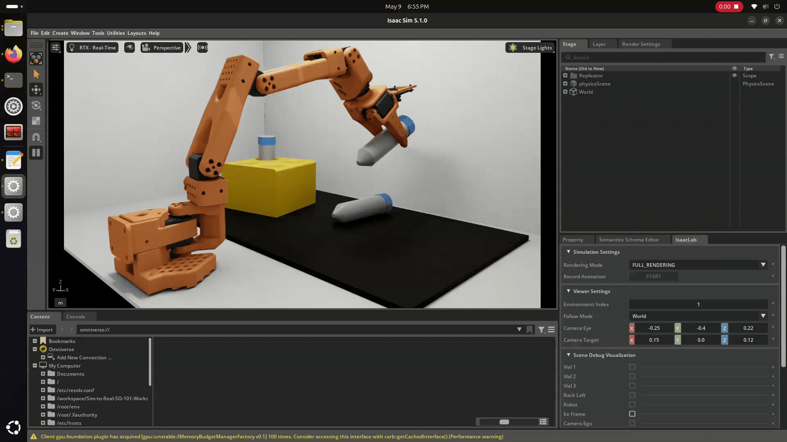

SO-101 Sim-to-Real Workshop
Train an SO-101 robot from simulation to real-world deployment on NVIDIA DGX Spark (ARM64 Blackwell), using Isaac Sim, LeRobot, and GR00T.
SO-101 Sim-to-Real 全流程指南
在 NVIDIA DGX Spark (ARM64 Blackwell) 上，使用 Isaac Sim + LeRobot + GR00T 实现 SO-101 机械臂从仿真到真机部署。

This is a DGX Spark (ARM64) adaptation of the official NVIDIA Sim-to-Real SO-101 Workshop. It provides:
- ARM64-patched Dockerfiles for simulation and real robot containers
- One-click build and launch scripts for DGX Spark
- Support for GR00T N1.6 (stable) and N1.7 (latest)
- All Python packaging fixes needed to run on aarch64
Pipeline: Simulate → Collect data → Train GR00T → Deploy to real SO-101
本仓库是 NVIDIA 官方 Sim-to-Real SO-101 Workshop 的 DGX Spark (ARM64) 适配版，提供：
- 仿真容器和真机容器的 ARM64 修复版 Dockerfile
- DGX Spark 一键构建和启动脚本
- 同时支持 GR00T N1.6 (稳定版) 和 N1.7 (最新版)
- 所有在 aarch64 上运行所需的 Python 包结构修复
流程：仿真 → 采集数据 → 训练 GR00T → 部署到真实 SO-101
Requirements
环境要求
| Component | Specification |
|---|---|
| Platform | NVIDIA DGX Spark (GB10), aarch64 |
| GPU | Blackwell, ~92 GB unified memory |
| OS | Ubuntu 24.04 LTS |
| CUDA | 13.0+ (N1.6) / 13.2+ (N1.7) |
| Docker + NVIDIA Container Toolkit | Latest |
Version stacks
版本方案
| N1.6 (stable) | N1.7 (latest) | |
|---|---|---|
| Isaac Sim | 4.5+ | 6 beta |
| Isaac Lab | 2.3.2 | 3.0.0-beta1 |
| GR00T | N1.6 | N1.7 |
| LeRobot | 0.4.3 | 0.5.2+ |
| Python | 3.10 | 3.12 |
| PyTorch | 2.7.0 | 2.10.0 |
Verify your setup
检查环境
docker --version
docker run --rm --gpus all nvidia/cuda:13.0.0-base-ubuntu24.04 nvidia-smi
uname -m # expected: aarch64Architecture
架构
┌──────────────────────────────────────────────────────────┐
│ DGX Spark (ARM64) │
│ │
│ ┌──────────────────┐ ┌──────────────────────────┐ │
│ │ Sim Container │ │ Real Robot Container │ │
│ │ (teleop-docker) │ │ (real-robot) │ │
│ │ │ │ │ │
│ │ Isaac Sim │ │ GR00T Policy Server │ │
│ │ Isaac Lab │ │ SO-101 Hardware Control │ │
│ │ LeRobot │ │ Feetech Servo SDK │ │
│ │ │ │ │ │
│ │ Teleop + Record ─┼────┼──▶ Inference + Execute │ │
│ └──────────────────┘ └──────────────────────────┘ │
│ │ │ │
│ ▼ ▼ │
│ HuggingFace Hub Real SO-101 Robot │
└──────────────────────────────────────────────────────────┘Clone and prepare
克隆与准备
git clone https://github.com/Lakesenberg/xlerobot_sim2real_isaacsim.git
cd xlerobot_sim2real_isaacsim
git checkout Sim-to-Real-SO-101-WorkshopCreate cache directories
Persists shader caches and pip downloads between container restarts.
创建缓存目录
挂载到主机后，下次启动不用重新编译着色器。
mkdir -p ~/docker/isaac-sim/cache/{kit,ov,pip,glcache,computecache}
mkdir -p ~/docker/isaac-sim/{logs,data,documents}
mkdir -p outputs datasetsConfigure robot ports (real robot only)
配置机器人端口（仅真机）
docker/env
export ROBOT_PORT=/dev/ttyACM0 # follower arm USB
export TELEOP_PORT=/dev/ttyACM1 # leader arm USB
export ROBOT_ID=orange_robot
export TELEOP_ID=orange_teleop
export CAMERA_GRIPPER=0
export CAMERA_EXTERNAL=4Build the simulation container
构建仿真容器
./build_n17_arm64.sh
# or: docker build -t teleop-docker:n17 -f docker/sim/Dockerfile.n17.arm64 .Base: nvcr.io/nvidia/isaac-lab:3.0.0-beta1 (Isaac Sim 6 beta, Python 3.12)
基础镜像: nvcr.io/nvidia/isaac-lab:3.0.0-beta1 (Isaac Sim 6 beta, Python 3.12)
./build_arm64.sh
# or: docker build -t teleop-docker -f docker/sim/Dockerfile.arm64 .Base: nvcr.io/nvidia/isaac-lab:2.3.2 (Isaac Sim 4.5+, Python 3.10)
基础镜像: nvcr.io/nvidia/isaac-lab:2.3.2 (Isaac Sim 4.5+, Python 3.10)
Build the real robot container
构建真机容器
docker build -t real-robot:n17 -f docker/real/Dockerfile.n17.blackwell.arm64 .docker build -t real-robot -f docker/real/Dockerfile.blackwell.arm64 .Launch the simulation
启动仿真环境
./run_teleop_n17_arm64.sh./run_teleop_arm64.shThe script handles all ARM64 environment variables, X11 forwarding, GPU passthrough, and volume mounts.
脚本自动配置所有 ARM64 环境变量 (LD_PRELOAD, GLIBC_TUNABLES)、X11 转发、GPU 透传和目录挂载。
What the launch script does internally
启动脚本内部做了什么
| Flag | Purpose |
|---|---|
-e LD_PRELOAD=...libgomp.so.1 | Pre-load OpenMP for TLS allocation |
-e GLIBC_TUNABLES=...tls=2048 | Expand static TLS region |
--privileged --gpus all | GPU + USB access |
-v .../cache/kit:... | Persist shader cache |
-v $(pwd)/source:... | Mount source for live edit |
Verify the environment
验证环境
Inside the container:
进入容器后运行：
# Check CUDA
python -c "import torch; print(f'CUDA: {torch.cuda.is_available()}, Device: {torch.cuda.get_device_name(0)}')"
# List environments
list_envs
# Test with zero actions
zero_agent --task Lerobot-So101-Teleop-Vials-To-Rack --num_envs 1 --enable_cameras
# Test with random actions
random_agent --task Lerobot-So101-Teleop-Vials-To-Rack --num_envs 1 --enable_camerasCollect teleoperation data
遥操作采集数据
lerobot_agent \
--task Lerobot-So101-Teleop-Vials-To-Rack-DR \
--num_envs 1 \
--enable_cameras \
--repo_id <your-hf-username>/so101-vials-sim-drThe -DR variant enables domain randomization (lighting, colors, camera angles) for better sim-to-real transfer.
Recording workflow
- Press B to begin recording
- Control the arm to pick up a vial and place it in the yellow rack
- Press N on success (saves episode, resets scene)
- Press R on failure (discards, resets)
- Repeat 50-100 times, then
Ctrl+C
-DR 变体启用域随机化（灯光、颜色、摄像头角度），显著提升 sim-to-real 迁移效果。
录制流程
- 按 B 开始录制
- 用键盘控制机械臂抓试管放进黄色架子
- 成功后按 N（保存并重置）
- 失败后按 R（丢弃并重置）
- 重复 50-100 次，然后
Ctrl+C
Push dataset to HuggingFace
上传数据集
huggingface-cli login
lerobot_push_dataset --repo_id <your-hf-username>/so101-vials-sim-drTrain a GR00T policy
训练 GR00T 策略模型
conda create -n gr00t python=3.12 -y && conda activate gr00t
git clone https://github.com/NVIDIA/Isaac-GR00T.git ~/Isaac-GR00T
cd ~/Isaac-GR00T && git checkout 4b1dca9d88d2a0b9ea5a65aa61c82ff89f5c4f0e
pip install -e .conda create -n gr00t python=3.10 -y && conda activate gr00t
git clone https://github.com/NVIDIA/Isaac-GR00T.git ~/Isaac-GR00T
cd ~/Isaac-GR00T
# ARM64: install bundled wheel (not on PyPI for aarch64)
pip install scripts/deployment/dgpu/wheels/torchcodec-0.10.0a0-cp310-cp310-linux_aarch64.whl
pip install -e .Fine-tune
微调
python scripts/train.py \
--dataset_repo_id <your-hf-username>/so101-vials-sim-dr \
--num_epochs 50 \
--batch_size 32 \
--output_dir ~/sim2real/models/groot-so101-vialsDeploy to real SO-101
部署到真实 SO-101
Launch real robot container
启动真机容器
./run_real_robot_n17_arm64.sh./run_real_robot_arm64.shCalibrate
校准
cd /workspace/Isaac-GR00T/gr00t/eval/real_robot/SO100
python so101_control.py --port /dev/ttyACM0 --id my_robot --calibrate
python so101_check_calibration.py --id my_robotRun inference (two terminals)
运行推理（需要两个终端）
# Terminal 1: policy server
cd /Isaac-GR00T
python scripts/serve.py --model_path /workspace/models/groot-so101-vials
# Terminal 2: robot execution
cd /workspace/Isaac-GR00T/gr00t/eval/real_robot/SO100
python so101_eval.py \
--robot_port /dev/ttyACM0 \
--robot_id my_robot \
--server_url tcp://localhost:5555 \
--task "pick up the vial and place it in the yellow rack"Available environments
可用仿真环境
| Environment ID | Description | 说明 |
|---|---|---|
Lerobot-So101-Teleop-Vials-To-Rack | Main task: pick vial, place in rack | 主任务：抓试管放架子 |
Lerobot-So101-Teleop-Vials-To-Rack-DR | Same + domain randomization (recommended) | 同上 + 域随机化（推荐） |
Lerobot-So101-Teleop-Vials-To-Rack-Eval | Evaluation, fixed appearance | 评估，固定外观 |
Lerobot-So101-Teleop-Vials-To-Rack-DR-Eval | Evaluation + domain randomization | 评估 + 域随机化 |
Lerobot-So101-Teleop-Base | Debug: basic teleop | 调试：基础遥操作 |
Lerobot-So101-Teleop-Task | Debug: lightbox + cameras | 调试：灯箱 + 摄像头 |
CLI
| Command | Description | 说明 |
|---|---|---|
list_envs | List all environments | 列出所有环境 |
zero_agent | Zero actions (debug) | 零动作测试 |
random_agent | Random actions (debug) | 随机动作测试 |
lerobot_agent | Teleop + record | 遥操作 + 录制 |
lerobot_eval | Evaluate policy in sim | 仿真策略评估 |
lerobot_push_dataset | Push to HuggingFace | 上传到 HuggingFace |
Teleoperation controls
键盘操控
| Key | 按键 | Action | 作用 |
|---|---|---|---|
| B | B | Begin recording | 开始录制 |
| N | N | Success + reset | 成功 + 重置 |
| R | R | Failure + reset | 失败 + 重置 |
| W/S | W/S | Forward / back | 前进 / 后退 |
| A/D | A/D | Left / right | 左移 / 右移 |
| Q/E | Q/E | Up / down | 上升 / 下降 |
| U/O | U/O | Gripper open / close | 夹爪开 / 合 |
ARM64 fixes applied
已应用的 ARM64 修复
All fixes are pre-applied. This section is for reference.
所有修复已内置在代码中，此处仅供参考。
| # | Issue | 问题 | N1.6 | N1.7 |
|---|---|---|---|---|
| 1 | torchcodec version not found | torchcodec 版本不存在 | ≥0.11.0 | ≥0.10.0 |
| 2 | CUDA PyTorch replaced by CPU | CUDA PyTorch 被 CPU 版替换 | Dynamic version capture | |
| 3 | triton not available | triton 不可用 | Removed from pyproject.toml | |
| 4 | TLS exhaustion crash | TLS 内存不足崩溃 | LD_PRELOAD + GLIBC_TUNABLES | |
| 5 | FFmpeg x86_64 binary | FFmpeg 架构错误 | linuxarm64 build | |
| 6 | Python version | Python 版本 | 3.10 + hidden wheel | 3.12 native |
| 7 | Missing __init__.py | 缺少 __init__.py | Created 2 files | |
| 8 | requires-python ≥ 3.11 | Python 版本限制过严 | Changed to ≥ 3.10 | |
Troubleshooting
常见报错
cannot allocate memory in static TLS block
Use the launch scripts which set LD_PRELOAD and GLIBC_TUNABLES automatically.
使用一键启动脚本，已自动设置 LD_PRELOAD 和 GLIBC_TUNABLES。
torch.cuda.is_available() returns False
pip replaced CUDA PyTorch with CPU-only. Rebuild with the ARM64 Dockerfile.
pip 把 CUDA 版 PyTorch 替换成了 CPU 版。用 ARM64 Dockerfile 重新构建。
ModuleNotFoundError: sim_to_real_so101
Missing __init__.py. Fixed in this repo. Verify: ls source/sim_to_real_so101/__init__.py
缺少 __init__.py。本仓库已修复。验证：ls source/sim_to_real_so101/__init__.py
Isaac Sim starts slowly (>5 min)
Isaac Sim 启动很慢（>5 分钟）
Normal on first launch (shader compilation). Cache mounts make subsequent starts faster.
首次启动正常（编译着色器）。缓存挂载后下次会快很多。
No GUI window
没有 GUI 窗口
Run xhost + before launching. The scripts do this automatically.
启动前运行 xhost +。启动脚本已自动执行。
Project structure
项目结构
Files in green are additions to the original workshop.
绿色文件是相比原始仓库新增的。